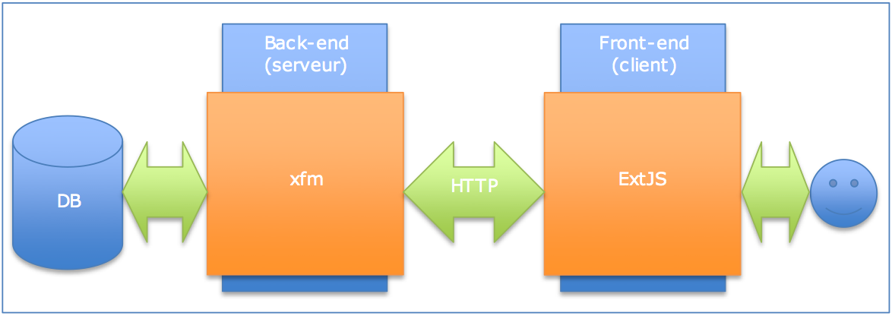

Architecture
Technologies
L'application est de type web, elle s'appuie sur la pile LAMP et utilise les technologies suivantes:
-
Languages: HTML, CSS, Javascript, PHP, SQL, JSON, Bash
-
Frameworks: ExtJS, xfm-php
-
Moteurs: Apache, MySQL, PHP
-
Système: Linux
-
Documentation: PhpDocumentor2, JsDuck, GitHub Wiki, Gollum-site, GitHub Pages, toc.py
Généralités
-
L'interface utilisateur est construite avec le framework javascript ExtJS
-
La base de données est exposée via HTTP à l'arôme REST, en utilisant le framework xfm-php
-
L'authentification utilise le système Shibboleth de l'UNIL, en utilisant une implémentation spécifique

Librairies
(components schema)
Librairies généralistes
-
xfm
est le composant serveur PHP pour créer les pages de l'application et exposer les données
-
ExtJS
est le composant client Javascript pour construire l'interface utilisateur
-
PHPUnit
est le composant PHP pour écrire les tests unitaires
-
DomPDF
est le composant PHP pour générer les fichiers PDF
-
ParseCSV
est le composant PHP d'interprétation de fichiers CSV, utilisé dans l'import des adresses fournies par Françine.
Librairies de projet
Ces librairies sont écrites spécifiquement pour le projet et nous les appelons des modules.
Outils
Les outils utilisés dans le cadre du projet sont:
Infrastructure
The following infrastructure components versions are used in production:
- Linux RHEL (fixme version)
- Apache 2.2
- MySQL 5.1
- PHP 5.3